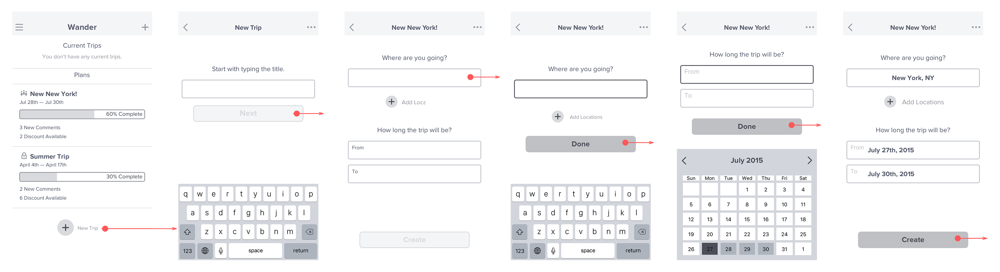
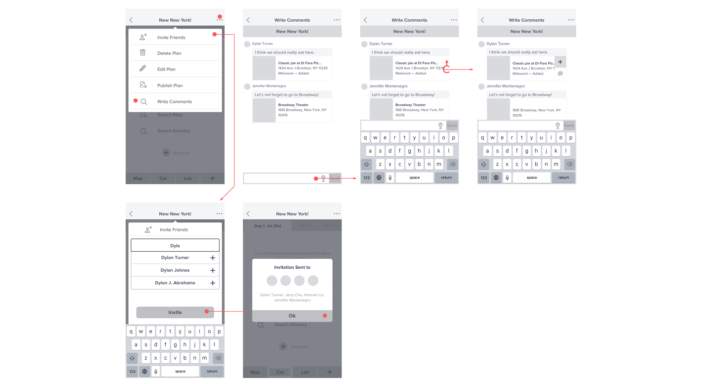
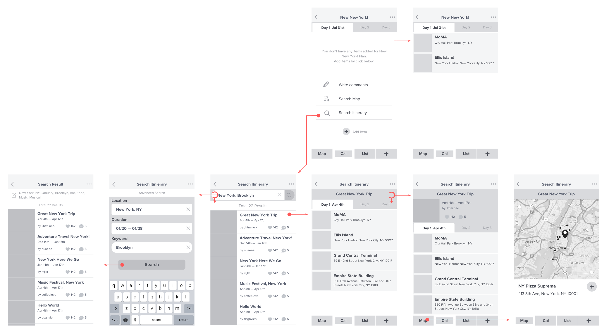

Why travel planning has to be so complicated? How can we collaborate to create travel plan without struggling? Our goal was to design a way that can help travelers collaboratively edit and create travel plans by combining their own research results and bucket lists.
Project Timeline
Jan 2015 - Apr 2015
Deliverable
Low, High fidelity mockup
Landing page design
Physical Board game
My Contribution
User Research
Wireframe & Prototype
Pitch Video
When we were conducting a research to understand travel planning habit of young adults, we noticed that they care about their friends' suggestion about where to visit, as well as 74% of them at least take a bucket list of things to do while traveling. Many of them were using notepads and text document to collect those lists and agreed that they were not useful when it comes to collaboration. Based on these insights, we narrowed down some of our features for the Wander application.
Create your own itinerary
There are many options out there for what to do on a trip, no matter the location. Wander allows you to collect these options in one location with all the information you need for each activity, restaurant, or place. After you have gathered a number of options, you can then organize them to t your trip, picking and choosing which ones you want for each day. From there, knowing what you have planned for each day will be a breeze.
Look at and customize others' itineraries
It always helps to have a little bit of inspiration when planning a trip. Wander’s most distinguishing feature is providing you with itineraries other people have used when on their trips. You can search for speci c places and keywords and look at plans from people with the same interests as you.
Share within the app for help
With Wander, you can share your itineraries on the app to get suggestions from friends and other travelers. Discover little tips and secrets known only by people who have visited.
Collaborate with others
If you’re travelling in a group, it is sometimes hard to coordinate and plan trips together. Wander makes it easier to collaborate with your friends to create and modify your travel plans.
Get Discounted Deals and Suggestions
Wander intelligently gathers information based on your itinerary and suggests places or activities you might like. Purchase tickets through the app to receive exclusive discounts from our partnered venues. Let Wander help you discover new and exciting things to do.
Share your own experience after a trip
After your trip, you can share your own travel experiences. Share your memories and help other people plan their own trips too.
Our team all took part in major user flows for the application including, creating a new travel plan, inviting collaborators, searching through other itineraries within the application and adding list of items in the plan.
This flow will allow users to open a plan and invite their friends to collaborate through the application.
Collaborators can discuss and share itinerary items before they commit the item into the plan. Here, they are also able to gather their friends' suggestion by requesting feedbacks to their local friends.
We had options to allow users to see the itineraries in different formats such as calendars, maps and lists. This was to help them fully understand each items before they add each items into their actual plans.
Not only designing a wireframe for the mobile experience, we also designed a concept for the web application. Original high fidelity mockup was designed by Hyundoug and Winni.
The project started by 5 teammates who have been experiencing trouble while planning a travel. We were passionate about traveling and planning travels to make the most out of it. To start with our project, we first conducted research to understand whether people bring travel itineraries, how they plan them out, and how do they find or collaborate on the itineraries. We started our research with %10% interviews with students, creating a survey and analyzing the result.
(User enactment) To simulate a travel planning experience similar to what our app would do, we had users enact planning a trip using Google docs. We tested three di erent scenarios: planning by yourself, planning a trip with a friend while in the same room, and planning a trip with a friend remotely. We provided a list of links to previously created itineraries for the users to utilize, which led to itineraries varying in detail. Users were at liberty to use these itineraries for inspiration or as their own plans in addition to the use of any internet searching methods they wanted to use. The results from these enactments showed that, most importantly, previously planned out itineraries that others have used are helpful to planning a trip. One of the enactments even copied an entire itinerary for himself and added a couple things to it to complete his plan. We also learned that the more detail in an itinerary, the better. For example, the itineraries that had personal comments from the owners or speci c details about locations, such as hours of operation, were more favorable.
Group traveling and Travel Habit Research
1user journey map
1Branding AB Testing
3user enactment
2prototyping sessions
Group traveling and Travel Habit Research
Understand people’s group traveling and travel planning habit.
14relevant service research
8interviews
85survey responds
(Survey results explanation) To understand our target user's travel planning habit, our team surveyed our customer base. In total, we surveyed 85 Participants, 44% of them were 18-25 years of age with 40% male, 60% female ratio.
Make plans before they leave for a trip
Text
Feel that planning is stressful
Text
Have a bucket list of things to see & do
Text
After conducting the survey with our target demographics, our team created the user journey map to understand touchpoints that users will face from planning to traveling.
We conducted a user enactment to see how people actually interacts with their travel companion. Next, we had 2 ideation sessions to come up with ideas that can solve some of the problem states that we observed during the research state. After narrowing down our ideas to 6. We created 6 storyboards to each describing how our application would help people planning travel and travlers on-the-go. Using these storyboards, we conducted %number% of speed dating sessions to receive feedback from the users.
{kind=link}
{kind=link}
{kind=link}
{kind=link}
{kind=link}